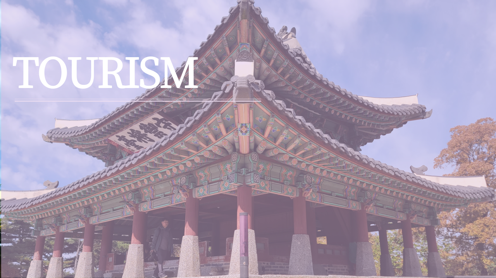
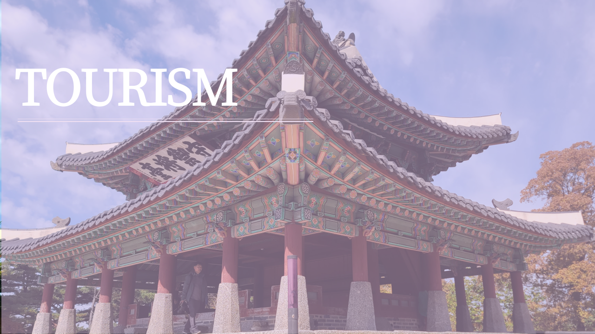

Overview
Korea boasts a rich and diverse cultural heritage that spans thousands of years. From ancient palaces to traditional festivals, the legacy of Korea's past continues to shape its present and future. This page explores the various aspects of Korea's cultural heritage, including its overview, history, culture, and tourism.
History
Korea's history is marked by a series of dynasties, each leaving a significant imprint on the nation's culture. The Three Kingdoms Period (57 BC – 668 AD) saw the rise of Goguryeo, Baekje, and Silla, which were later unified under the Silla Kingdom. The Goryeo Dynasty (918–1392) followed, known for its advancements in ceramics and Buddhism. The subsequent Joseon Dynasty (1392–1897) established Confucianism as the state ideology and is renowned for its cultural achievements, including the creation of the Korean script, Hangul. These historical periods have contributed to a rich tapestry of cultural heritage that is evident in Korea's numerous palaces, temples, and artifacts.
Culture
Korean culture is a vibrant mix of traditional and contemporary elements. Traditional Korean culture includes performing arts such as Pansori (musical storytelling), traditional dance, and music played on instruments like the Gayageum. Festivals such as Seollal (Lunar New Year) and Chuseok (Harvest Festival) are celebrated with great enthusiasm, featuring traditional games, foods, and rituals. Modern Korean culture, often referred to as "Hallyu" or the Korean Wave, includes globally popular K-pop music, K-dramas, and contemporary art. The preservation of traditional crafts like hanbok (traditional clothing), pottery, and hanji (traditional paper) showcases Korea's dedication to maintaining its cultural heritage.
Tourism
Korea offers a myriad of attractions that highlight its cultural heritage. Historic sites such as Gyeongbokgung Palace in Seoul and Bulguksa Temple in Gyeongju provide glimpses into Korea's royal and spiritual past. The UNESCO World Heritage-listed Jeju Volcanic Island and Lava Tubes are natural wonders that also reflect cultural significance. Visitors can explore traditional Korean villages like Bukchon Hanok Village in Seoul, where they can experience historical architecture and customs firsthand. Festivals, such as the Andong Mask Dance Festival and the Boryeong Mud Festival, attract tourists from around the world, offering unique cultural experiences. Additionally, the Korean Folk Village and the National Museum of Korea provide comprehensive insights into the nation's rich cultural heritage.